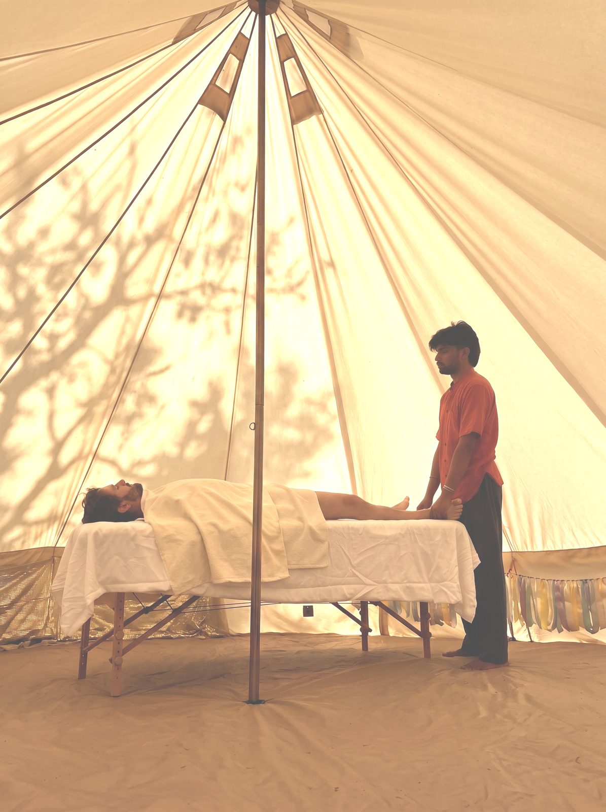
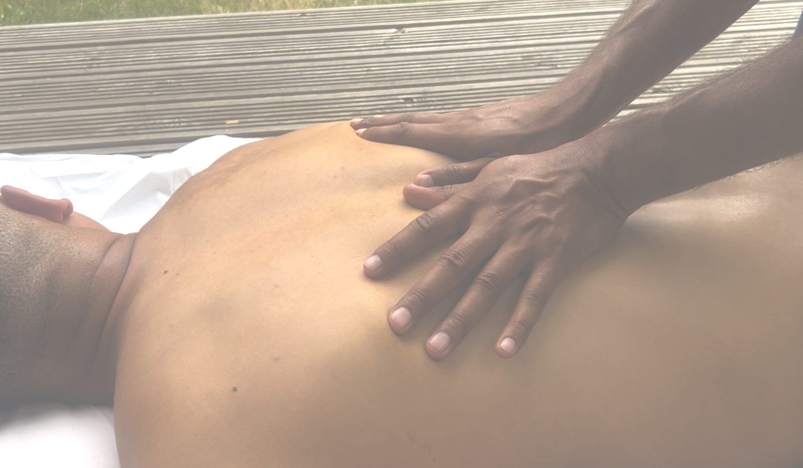
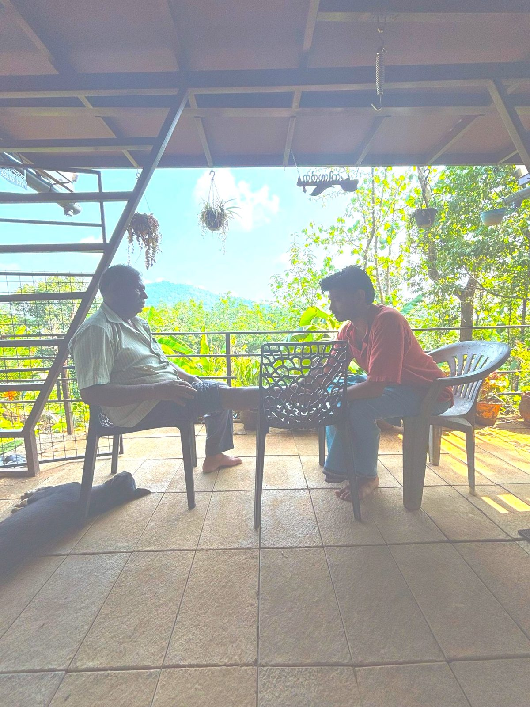
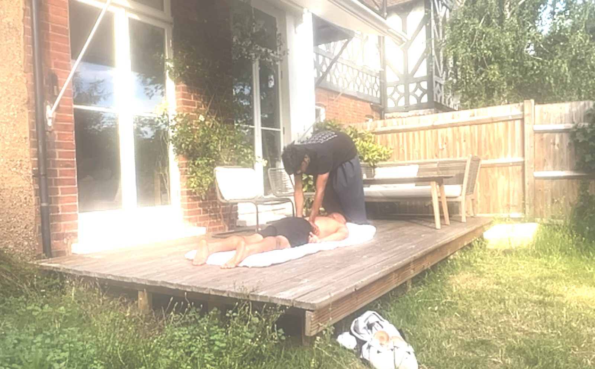
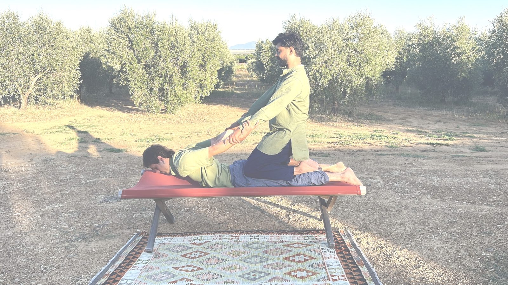

Some things don’t shift through talking alone.
Integrative, trauma-informed bodywork for people carrying what the mind can’t resolve on its own — burnout, tension, the kind of stuck that talking hasn’t touched.
Sessions at my Croydon studio — or a home visit across South London.

You’ve read the books, done the talking, pushed through — and your body still holds it.
Beneath a stiff neck or shallow sleep is often something older: a pattern of bracing, an emotion that never fully moved through. When talking has taken you as far as it can, the work becomes physical.
This isn’t a fixed routine. Each session begins with a conversation — not to take a history, but to understand what your body is carrying right now — and from there we choose the approach that fits. Not fixing. Recognising — and from recognition, choosing.

A place to begin, and deeper work to grow into.
Body Mapping Session
A first visit — part conversation, part hands-on assessment — to find where your body is holding and where the work should begin.
The Unbrace
Focused deep-tissue and Thai bodywork to release long-held tension — for bodies that have been braced for a long time.
The Current
A flowing session blending Thai bodywork, reflexology and energy work to move what feels stagnant and restore ease.
The Seasonal Reset
A guided reset drawing on Ayurvedic bodywork and lifestyle support across several sessions — a genuine seasonal recalibration.

Hello, I’m Samar.
I’m an integrative bodyworker trained across traditions — Thai bodywork at ITM Chiang Mai, Ayurvedic therapies in Kerala (Abhyanga, Shirodhara, Chi-Nei Tsang and marma work), reflexology, Reiki, breathwork and forest bathing — currently deepening this with herbalism training.
My work sits where talking therapy reaches its ceiling: with the tension, exhaustion and held experience that live in the body. Sessions are unhurried, responsive, and shaped around what you actually need on the day.
Open to all bodies, genderqueer identities, and neurodiverse people.
Simple to begin.
Book a first session
Choose a time online. Your first visit is a Body Mapping Session — no prior experience needed.
We find the work
We talk, then work with the body — deep tissue, Thai, Ayurvedic oil work, or something quieter.
You carry it forward
You leave with simple practices, and we shape an ongoing rhythm if you’d like one.


★★★★★“What really stood out was Samar’s professionalism and knowledge. He took the time to understand what was going on with my body… It didn’t just feel like a standard massage — it felt tailored to what my body actually needed. After the session I felt noticeably lighter, looser, and much more relaxed… almost as if my nervous system had completely reset.”
— {{Reviewer 1 name}} · home visit, South London
★★★★★“I got glimpses of the roots and origins of many of the tensions I endure daily. Thanks to Samar’s calming presence I felt assured and comfortable to sink deeper into the sensations, in a safe space.”
— {{Reviewer 2 name}} · Chi-Nei Tsang
Questions
Where do sessions take place?
At my studio in Croydon, or as a home visit across South London — many clients find the treatment more restful when they don’t have to travel afterwards.
I’ve never had bodywork like this. Is that okay?
Completely. Most people come without knowing exactly what they need. We start with a conversation, agree what to focus on, and go at your pace.
What happens in a first session?
Your first visit is a Body Mapping Session: we talk through what’s going on, then begin gentle hands-on assessment to find where your body is holding.
How much do sessions cost?
{{Add your session pricing here.}} The Seasonal Reset package is £195. Concessions may be available — please ask.
What’s your cancellation policy?
{{Add your cancellation policy — e.g. 24 hours’ notice.}}
Where to find me.
I work from a studio in Croydon and travel for home visits across South London.